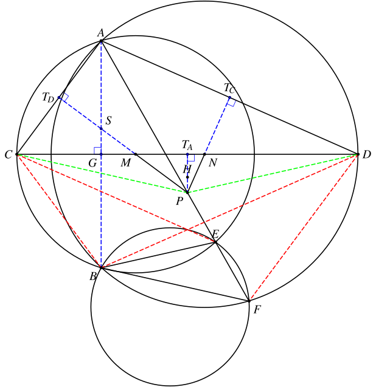
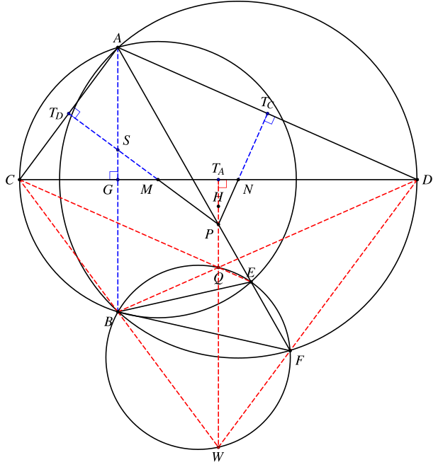
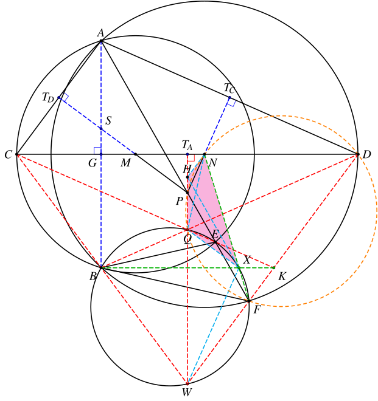
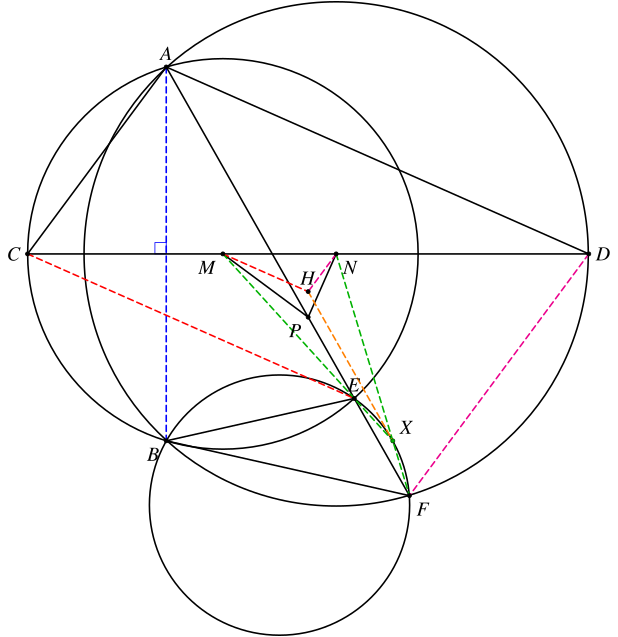
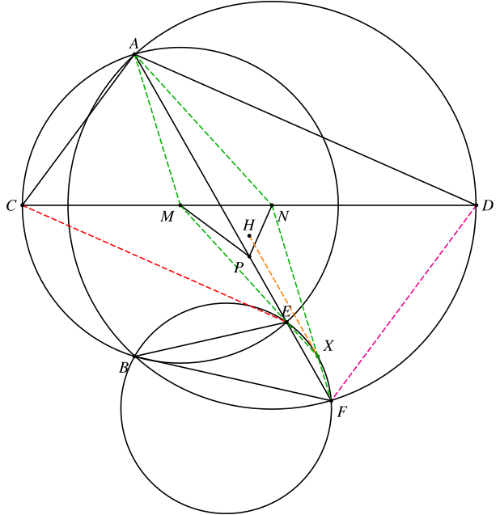
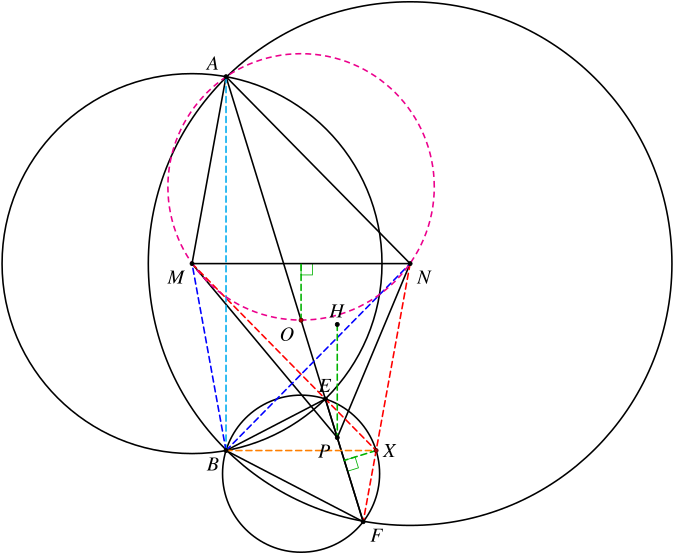

1. 题目
设圆 Ω 和圆 Γ 的圆心分别为点 M 和点 N，且 Ω 的半径小于 Γ 的半径。设两圆 Ω 和 Γ 相交于相异的两点 A、B，设直线 MN 与圆 Ω 的交点之一为 C，直线 MN 与圆 Γ 的交点之一为 D，且点 C、M、N、D 在直线上顺次排列。记点 P 是三角形 ACD 的外心。直线 AP 交圆 Ω 于点 E=A，直线 AP 交圆 Γ 于点 F=A。设点 H 是三角形 PMN 的垂心。
证明：过 H 且平行于 AP 的直线与三角形 BEF 的外接圆相切。
2. 分析
这个题目的图比较关键，有很多信息如果图画好了是比较容易观察出来的（比如平行、共点）。
首先观察题目给的条件，直接可以得出如下结论：
- A、B 关于 CD 对称；
- PM⊥AC，PN⊥CD，PN⊥AD，由此带来了很多垂直和共圆。
这两部分是后面倒角的关键信息。
这时已经做出的辅助线包括：
- AB、BC、BD；
- 三条垂线 PHTA、PNTC、PMTD。
由于 ACBE、ABFD 四点共圆，因此连接 CE、DF 是自然的想法。这个时候可以发现 CE、DF 分别于 AD、AC 平行。这实际上是 Reim 定理 的模型，伴随着两组共圆（ADPM、CEPM 和 ACPN、DFPN）。这些共圆的性质后面都会用到，特别是 DFPN 这一组。
如果在作图的时候 Ω 的半径比 MN 要大，这个时候的能观察到的另一个结论就是 CE 和 BD 的交点（设为 Q）就在 △BEF 的外接圆上。否则的话，则需要延长 CE 才能找到该点。而且很容易发现，点 Q 也在直线 PH 上。
另外不太好找到的是，直线 BC 和 DF 的交点 W 也在 △BEF 的外接圆上，且也在直线 PH 上。
这两个点对应的实际上还是 Reim 定理的模型，用前面平行的结论和 Ω、Γ 两个圆可以很快地证出来。
如果前面在证明平行的时候，画出了 DFPN 这一组共圆，这时我们还可以发现，点 Q 也在这个圆上。
接下来的另一个观察是 CWFN 共圆。这个可以直接倒角证明，也可以利用前面的 QBWF 和 QFDN 两组共圆结合密克定理进行转换。
下面的问题是如何确定切点。
有了前面两组平行的结论，延长 CE 和 DF 交于 K 是一个自然的想法，这样就得到了平行四边形 ACKD，再利用最开始的对称，可以发现 BK∥CD，CBKD 是等腰梯形。
这个时候连接 BK 和 NF，就会发现它们的交点就是最终的切点。于是我们考虑去证明这个点满足条件：
- 点 H 在 △BEF 的外接圆上；
- HX∥AP；
- HX 与 △BEF 的外接圆相切。
这里面第一个证明非常简单，第三个则是去倒弦切角即可，而其中的难点在于如何证明 HX∥AP。
回顾一下前面的证明过程，我们会发现点 H 是 △PMN 的垂心这个条件实际上并没有真正用到。而垂心有一个很好的性质（∡PHN=−∡PMN），我们可以利用它来倒角。
通过上面的性质，我们可以证明一组关键的共圆：HQXN。有了这组共圆，我们就可以利用它和 DFQPN 这一组共圆去证明后两个结论了。
3. 解答
引理：Reim 定理
设两圆 Ω1 和 Ω2 交于点 A、B。点 E、F 在 Ω1 上，直线 AE、BF 分别与 Ω2 交于点 G、H，则 GH∥EF。

证明很简单，由
∡EFH+∡GHF=∡EAB+∡GAB=0
可知 GH∥EF。
这个定理反过来也成立。如果知道 ABFE 共圆和 GH∥EF，则有
∡BAG=∡BAE=∡BFE=∡BHG
可得 ABHG 共圆。
步骤1：证明平行
设 △ACD 三边的中点依次为 TA、TC、TD，则 TA∈PH，TC∈PN，TD∈PM。根据条件，PH、PN、PM 分别于 △ACD 的三边垂直。
连接 BC、BD、AB，注意到 Ω 和 Γ 的交点 A、B 关于两圆心所在直线 CD 对称，因此 AB⊥CD，AB∥PH。设 S=AB∩PM。
连接 CE、DF，则 CE∥AD，DF∥AC。

由
∠APM=21∠APC=∠ADC
可知 A、D、P、M 共圆。由
∠AEC=∠ABC=∠CAB=∠CMTD
可知 C、E、P、M 共圆。由 Reim 定理可知 AD∥CE。
同理，由
∠APN=21∠APD=∠ACD
可知 A、C、P、N 共圆。由
∠AFD=∠ABD=∠DAB=∠DNTC
可知 D、F、P、N 共圆。由 Reim 定理可知 AC∥DF。
步骤2：构造交点
设 Q=BD∩CE，W=BC∩DF，则 Q、W 恰好是直线 PH 与 △BEF 的外接圆的两个交点。

先证明这两个点在直线 PH 上。
由第1步的结论可知
⟹⟹⟹⟹∠QCD=∠ADC=∠QDCQC=QDQ∈PH∠WDC=∠ACD=∠WCDWC=WDW∈PH
根据 Reim 定理的逆定理，
AD∥QEADFB 共圆⎭⎬⎫⟹QEFB 共圆
以及
AC∥FWACBE 共圆⎭⎬⎫⟹FWBE 共圆
点 Q 是 △WBF、△DNF、△CBN 的外接圆的交点（即密克点）。
上面证明了点 Q 在 △WBF 的外接圆上。由
∠TAPN=∠ADC=∠QDN
可知 D、N、P、Q 共圆。
在前面第1步中，已经证明了 D、N、P、F 共圆，因此 Q 在 △DNF 的外接圆上。
根据密克定理，点 Q 也在 △CBN 的外接圆上。
由此可得
DN⋅DC=DQ⋅DB=DF⋅DN
因此 N、F、W、C 共圆。
NFWC 共圆的另一个证明方法
∠NFD=∠NDF=∠NCW
步骤3：确定切线的位置
设 K=CE∩DF，可以得到平行四边形 ACKD，等腰梯形 CBKD，BK∥CD。
设 X=BK∩NF，则
- 点 X 在 △BEF 的外接圆上；
- HX∥AP；
- HX 与 △BEF 的外接圆相切。

根据 Reim 定理的逆定理，
CN∥BXCNFW 共圆⎭⎬⎫⟹BXFW 共圆
由
∠NXQ=∠FWQ=90°−∠WDM=∠DMP=180°−∠NHP
可知 N、H、Q、X 共圆，因此
∡(PH,HX)=∡QHX=∡QNX=∡QDF=∡BAP=∡(AB,AP)
注意到 PH∥AB，故 HX∥AP。
类似的，
∡(XQ,PH)=∡XQW=∡XBW=∡DCB=∡TDCG=∡TDSG=∡(MP,AB)
故 XQ∥MP。
因此
∡HXQ=∡(HX,XQ)=∡(AP,MP)=∡APM=∡ADC=∡CDB=∡KBD=∡XWQ
可知 HX 与 △BEF 的外接圆相切。
由上面的结论可知 HX 即为所求的直线，命题得证。
4. 另一种解法
由 ∠AEC=∠CAB=∠EAD，可知 AD∥CE。
同理，由 ∠AFD=∠BAD=∠CAE，可知 AC∥DF。

设 X=ME∩NF。
由 ∠MEB=90°−∠BAE=∠NFB 可知 X、E、B、F 共圆，即点 X 在 △BEF 的外接圆上。
由点 H 是 △PMN 的垂心的条件可知 HM⊥PN，HN⊥PM。注意到 PM⊥AC，PN⊥AD，因此 HM∥AD∥CE，HN∥AC∥DF，可得
∠NMH=∠MCE=∠MEC=∠HME∠MNH=∠NDF=∠NFD=∠HNF
因此点 H 是 △XMN 的内心。
由
∡(HX,MP)∡(AP,MP)=∡(HX,HN)+∡(HN,MP)=∡XHN+90°=90°+21∡XMN+90°=∡HMN=∡APM=∡ADM=∡HMN
可知 HX∥AP，因此 ∠XFE=∠NXH=∠HXE，故 HX 是 △BEF 的外接圆的切线，命题得证。
HX∥AP 的另一个证明方法

由
∠NME=2∠MCE=2∠NDA=∠MNA∠AMN=2∠ACM=2∠NDF=∠MNF
可知 AN∥ME，AM∥NF，因此四边形 AMXN 是平行四边形。
注意到直线 PM、PN 分别平分 △AMN 的外角 ∠AMC、∠AND，因此点 P 是 △AMN 的旁心，AP 平分 ∠MAN。
结合前面的点 H 是 △XMN 的内心，可知 HX 平分 ∠MXN，因此 HX∥AP。
5. 还有一种解法
注意到直线 PM、PN 分别平分 △AMN 的外角 ∠AMC、∠AND，因此点 P 是 △AMN 的旁心，AP 平分 ∠MAN。接下来我们可以扔掉 C、D 两点了。

注意到 ∠BME=2∠BAP=∠BNF，因此
⟹⟹△BME∼△BNF△BEF∼△BMN△BEF∼△AMN
实际上，点 B 是完全四边形 MEFN 的密克点。
设 X=ME∩NF，则 X 在 △BEF 的外接圆上。因此
∠EBX=∠EFX=∠PAN=21∠MAN=21∠EBF
可知 BX 是 ∠EBF 的平分线，点 X 是弧 EF 的中点。
接下来只需要证明 HX∥AP 即可。
注意到 AP 平分 ∠MAN，我们设直线 AP 和 △AMN 的外接圆的异于 A 的交点为 O，则点 O 是弧 MN 的中点，四边形 AMON∼BEXF。设 ∠HPA=∠BAP=α，则相似比为
AM:BE=BM:BE=1:2sinα
由点 P 是 △AMN 的旁心，可知点 O 是 △PMN 的外心。
结合点 H 是 △PMN 的垂心可知
PH=2⋅dis(O,MN)
由相似可知
dis(X,AP)=dis(O,MN)⋅2sinα=PH⋅sinα=dis(H,AP)
因此 HX∥AP。
故 ∠HXE=∠XEF=∠XFE，可知 HX 是 △BEF 的切线，命题得证。
这里直接利用 ME 和 NF 的交点给出点 X。也可以设点 X 为弧 EF 的中点，然后证明 X 在直线 ME、NF 上，过程是类似的。